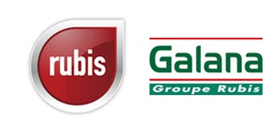

Galana (site e-commerce / WordPress)
Développement et refonte du site Galana sous WordPress, avec une approche centrée sur la performance digitale et l’optimisation de la conversion.

Une étude de marché et une stratégie de communication ont également été effectuées avec le service marketing et communication afin d’identifier les orientations stratégiques et de définir le positionnement du message.
Le projet a inclus la rédaction du cahier des charges, une analyse UX approfondie, rédaction web ainsi qu’un travail sur l’ergonomie globale et la structuration des parcours utilisateurs afin de fluidifier la navigation et maximiser l’engagement.
Mise en place d’une stratégie de call-to-action (CTA) optimisés, accompagnée d’un travail d’A/B testing pour améliorer les taux de conversion.
Une dimension data-driven marketing a également été intégrée via l’analyse des performances à l’aide de Google Ads, avec le suivi de KPI clés (taux de clics, conversions, coût par acquisition), permettant d’orienter les décisions d’optimisation. Travail également réalisé sur l’habillage graphique, le respect de l’identité de marque et l’optimisation de l’expérience utilisateur sur l’ensemble du tunnel de navigation.